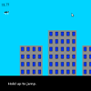
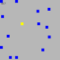

Jumping Dog
You jump the dog between the buildings. It's not very realistic, and the jumps are randomized and cannot always be completed.

Square Avoidance
You have to avoid the blue squares, which increase in number with time.
You jump the dog between the buildings. It's not very realistic, and the jumps are randomized and cannot always be completed.
You have to avoid the blue squares, which increase in number with time.